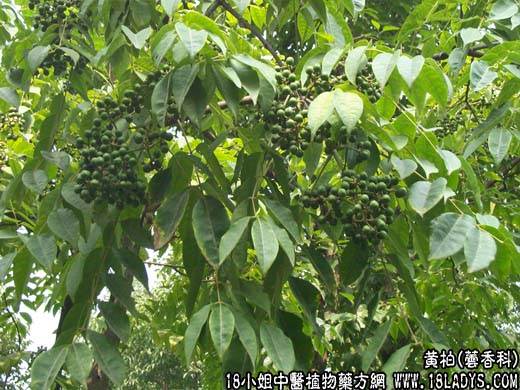

【中药概述】
黄柏为芸香科乔木植物黄檗的树皮。苦、寒。归肾、膀胱、大肠经。
1．清热燥湿：用于湿热泻痢、黄疸、带下、脚膝肿痛及热淋等，如<止带丸>、<三妙丸>、（伤寒论<栀子柏皮汤>）、（傅青主女科<易黄汤>黄柏，山药，车前子，芡实，白果）。
2．泻火解毒：用于疮疡肿毒、湿疹，多与黄连，栀子等配伍。
3．清热退蒸：用于阴虚发热、骨蒸盗汗、梦遗滑精，常与知母相须为用并配伍地黄，龟板等，以滋肾阴，兼泻相火。一般清热、燥湿、解毒多生用；欲其入肾经降相火、退虚热，多盐炒用。
【药效鉴别】
黄柏沉降，能直走下焦，清泻肾、膀胱、大肠三经蕴结之湿热。方如（兰室秘藏<滋肾丸>黄柏，知母，肉桂）。
【临证应用】
黄柏 地榆 白及各等份，焙干研末，香油调敷。治烧伤。
【药理作用】
1.抑菌作用，水煎剂对白色含球菌、大肠杆菌、伤寒杆菌、霍乱孤菌有杀灭作用，对钩端螺旋体有抑制作用；
2.可增强动物白血球的吞噬能力。
【化学成分】
含小檗碱、防己碱、木兰碱、药根碱及黄柏甙等。
【用量用法】
5——30g，水煎服，或入剂。外用适量。
【使用注意】
脾胃虚寒不宜。
【附】
盐黄柏：苦寒。归肾、膀胱经。可缓和苦燥之性，不伤脾胃，而能增强泻相火之力。用于肾虚火旺，盗汗骨蒸，常与知母、熟地、丹皮、山茱萸等同用。
酒黄柏：苦，微寒。归肾、膀胱经。能治上焦之湿热，且能入血分，治血分之病，常与白头翁、秦皮、黄连等。